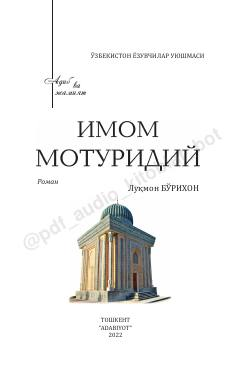

IMBuyuk alloma Abu Mansur Moturidiy hayoti va ilmiy merosiga bag'ishlangan tarixiy roman.
Ushbu roman IX-X asrlarda yashagan buyuk alloma va ilohiyotshunos Abu Mansur Moturidiyning hayoti va faoliyatiga bag'ishlangan. Asarda o'sha davrning murakkab siyosiy-ijtimoiy muhiti, diniy bahs-munozaralar va allomaning ilmiy merosi badiiy shaklda yoritib berilgan.